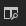
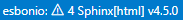

Sphinx 설치#
파이썬 설정#
Sphinx를 윈도우에서 원활하게 사용하기 위해서는 시스템의 파이썬을 사용하는 것을 가정합니다. 따라서 파이썬을 다운로드 합니다.
Warning
파이썬을 설치한 뒤 파이썬과 파이썬 스크립트 폴더 경로가 환경변수
PATH (혹은 Path) 에 등록되었는지 확인해야 합니다.
파이썬 스크립트 폴더는 라이브러리 설치시 제공되는 스크립트들이 저장되는 폴더입니다.
Sphinx는 sphinx-quickstart 등의 스크립트를 사용하기 때문에
환경변수에 등록되어야 합니다.
파이썬 설정이 완료되었으면 다음과 같은 Sphinx와 관련 라이브러리를 설치합니다.
# Sphinx.
pip install sphinx
# Sphinx에서 사용할 테마.
pip install sphinx_rtd_theme
# Jupyter notebook을 문서에 사용하기 위한 extension들.
pip ipython nbsphinx
위의 라이브러리들은 가상환경이 아닌 시스템의 기본 파이썬 환경에 설치되어야 합니다.
VSCode 설정#
작성시 효율을 높히기 위하여 변경 사항을 실시간으로 볼 수 있는 preview 기능이 필요합니다. VSCode와 extension을 사용하면 프리뷰 기능을 사용할 수 있습니다.
VSCode extension 탭에서 ReStructuredText extension을 설치합니다.
다음 설정을 위해서는 VSCode 프로젝트가 필요합니다.
아래의 설정은 문서 프로젝트를 새로 만들 때마다 해줘야 합니다.
아래와 같이 프로젝트를 생성한 뒤 터미널을 실행하고 기본 시스템 환경에서
shpinx-quickstart 를 실행합니다.
sphinx-quickstart doc
Note
명령어 뒤의 doc은 doc 폴더에 문서 기본 파일들을 생성하겠다는 의미입니다.

몇가지 질문을 하는데 적당히 입력합니다.
> Separate source and build directories (y/n) [n]: y
> Project name: Project for Setting Test
> Author name(s): Sangwon Lee
> Project release []:
> Project language [en]:
위의 과정이 완료되면 doc 경로에 기본 문서 파일이 생성됩니다.
다음과 같이 doc/ 폴더에서 make html 을 입력하면
doc/build/html/index.html 라는 파일이 생성됩니다.
웹브라우저를 사용하여 실행하면 다음과 같습니다.

이렇게 작성한 뒤 make 를 사용하여 확인할 수도 있지만 위에서 언급한 것과 같이
실시간으로 확인하는 것이 더 효율적입니다.
실시간 프리뷰를 위하여 프로젝트 설정 파일인 .vscode/settings.json 의 내용에
다음과 같은 항목을 추가합니다.
{
"esbonio.sphinx.buildDir" : "${workspaceFolder}/doc/build",
"esbonio.sphinx.confDir" : "${workspaceFolder}/doc/source",
"esbonio.sphinx.srcDir" : "${workspaceFolder}/doc/source",
"restructuredtext.preview.scrollEditorWithPreview": false,
"restructuredtext.preview.scrollPreviewWithEditor": false,
}
만약 나중에 doc 이 아닌 다른 경로를 사용하신다면 그에 맞게 수정하면 됩니다.
맨 아래 2개는 스크롤 관련 옵션입니다. 가끔 코드와 프리뷰의 스크롤 싱크가 맞지 않아서
false 로 설정하였습니다.
위의 과정을 완료한 뒤 doc/source/index.rst 파일을 연 뒤
오른쪽 상단의  를 클릭하여 프리뷰를 실행하면 다음과
같은 화면을 확인할 수 있습니다.
Note
만약 잘 작동하지 않는다면 VSCode를 재실행하거나
혹은 VSCode 오른쪽 아래의  를 클릭하여 esbonion 서버를 재시작 하세요.
가끔 이미 실행중인 esbonio 서버가 새로운 변경사항을
확인 못 하는 경우가 있습니다.
doc/source/index.rst 에서 원하는 문장을 작성한 뒤 저장하면 오른쪽의 프리뷰도
업데이트 됩니다.
Welcome to Project for Setting Test's documentation!
====================================================
.. toctree::
:maxdepth: 2
:caption: Contents:
아무말이나 써도 되나요? 되는군요.
Indices and tables
==================
* :ref:`genindex`
* :ref:`modindex`
* :ref:`search`
위에서 설치한 기본 테마를 적용하려면 doc/source/conf.py 를
다음과 같이 수정합니다.
html_theme = 'sphinx_rtd_theme'
그 다음 esbonio 서버를 재시작 하면 다음과 같이 좀 더 읽기 좋은 테마가 적용됩니다.